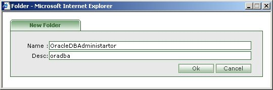

- Go to the destination folder/drawer where you would like to create new folder.
- Click on the 'New Folder' icon [
 ] .
] .

- Enter the name of the folder.
- Enter the description of the folder(optional)
- Press 'Ok' to create new folder.
- Press 'Cancel' to abort creating new folder.